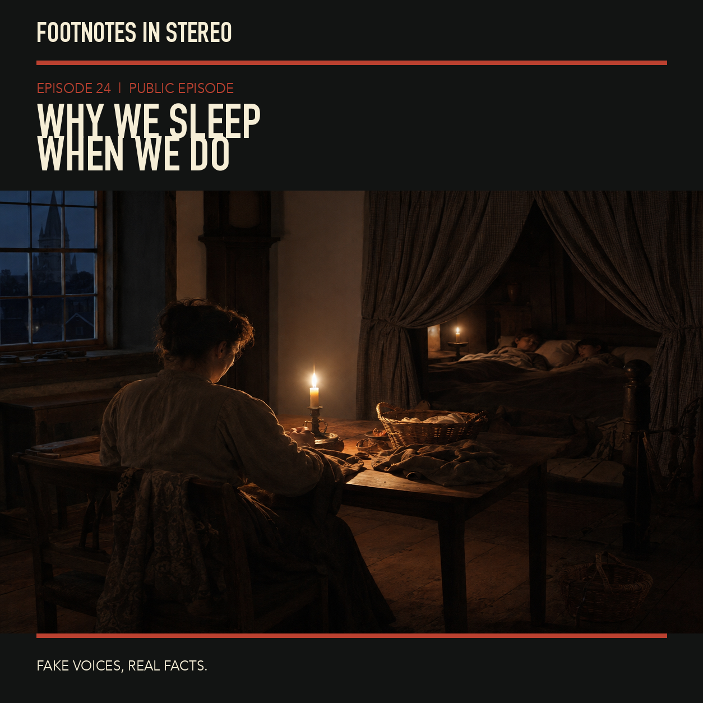

Episode 24 · Public episode
Why humans used to wake at midnight
Episode24 compares historical first and second sleep with measured sleep in three contemporary non-industrial communities and an eight-person Colorado camping experiment. Plausible environmental explanations are interpretations, not universal biological prescriptions. Actigraphy estimates sleep, temperature associations do not establish sole causes, and the camping study measured circadian timing rather than a universal cure. Created with Gemini Notebook. The conversation and voices in this episode were generated with Gemini Notebook. Fake voices, real facts.
Sources
Transcript
Machine transcript; lightly formatted and subject to correction.
Welcome to the Deep Dive. I'm Mira.
And I'm Theo.
This is Footnotes in Stereo Episode 024.
Why humans used to wake at midnight?
Before we begin, please note our explicit Gemini notebook AI
conversation voices disclosure.
You are hearing fake voices, but we are discussing real facts.
Right. And for today's Deep Dive, I think we really need to start by reframing how we
look at something we all do every single night.
Yeah, sleep. Like imagine you break a bone, right?
You go to the hospital, you get an x-ray, and there it is.
Just this jagged white line on a black background.
Very clean. Very obvious.
Yep. Dr. Point-Sooten says, you know, there's the problem.
It's broken and it's binary.
It's almost comforting in a weird way because the problem is
entirely visible and perfectly categorized.
You know exactly what's wrong.
But what if I told you that the way we view our sleep,
that that sacred, culturally mandated, unbroken eight-hour block of unconsciousness,
is based on a diagnostic landscape that is basically broken?
It's a great question to ask.
Because we treat waking up at 3 a.m. like a fractured femur.
We panic. We stare at the ceiling.
I mean, we diagnose ourselves with a disorder almost instantly.
But today we are going to look at evidence that totally scrambles that whole picture.
And that framing, the broken x-ray machine analogy,
is exactly why we need to recalibrate how we look at human rest.
Definitely.
The anxiety surrounding sleep has just reached this fever pitch.
And it's largely because we are comparing ourselves to this standardized,
industrialized metric that, well, it might not actually reflect the full spectrum of our biology.
Which brings us to the mission for this deep dive.
Today we are going to explore the historical textual evidence of something called
a first and second sleep.
Which is fascinating on its own.
Oh, it really is.
And then we are going to contrast those centuries-old diaries and medical texts
with modern, hard scientific measurements of sleep patterns in contemporary, non-industrial
communities.
Right. Getting into the actual data.
Yeah.
And finally, we're going to look at a small, modern camping experiment
that isolated the variable of artificial light.
So we're covering history, field data, and physiological experimentation.
We do need to establish some rigorous guardrails before we step into all this material though.
Always a good idea.
The topic of human sleep is incredibly diverse.
And honestly, it is a magnet for hyperbole.
Oh, for sure.
So you will not hear us making claims that our sleep has been somehow weaponized by modernity.
We are actively avoiding any dramatic statements about
some biological war against our circadian rhythms.
Right. No fear mongering here.
Exactly.
We aren't going to offer any universal biological guarantees for how you specifically should
structure your night.
And we definitely aren't making futuristic predictions about human evolution or genetic programming.
So basically, no overarching theories about how we are
devolving because of our smartphones.
None at all.
We are stripping away the noise and taking a very grounded, highly analytical look at three
specific sources.
Let's lay those out for everyone.
First, we have historian Roger Eckertch's massive historical compilation of textual
evidence regarding segmented sleep.
That's a big one.
Yeah, it's foundational.
Second, a 2015 study by anthropologist Gandhi Yettish and colleagues observing sleep in
contemporary non-industrial societies.
And third, a 2013 study by Kenneth Wright and colleagues detailing a specific circadian
and training experiment in the Colorado Rocky Mountains.
We are limiting ourselves strictly to what these three sources document, measure, and analyze.
Nothing else.
That's the plan.
Okay.
Let's dive right into that first source.
If we rewind the clock and travel back to Western societies before the industrial revolution,
we stumble upon a routine that honestly, it sounds like a glitch in the matrix to anyone
living in the 21st century.
It really does.
This is the culmination of years of archival research by Roger Eckertch,
who compiled an enormous volume of textual references to a phenomenon called segmented sleep.
It completely upends our modern assumptions about how the night is supposed to work.
Completely.
Eckertch's research documents this widespread socially accepted pattern where people just
didn't sleep in one long continuous block.
Instead, they essentially slept in two distinct shifts.
Like a split shift at work, but for resting.
Yeah, basically.
They would retire at nightfall, sleep for a few hours, and then they would wake up.
But the key here is that this wasn't a panicked, tossing and turning kind of wakefulness.
Right.
Not the modern insomnia panic.
No, it was a recognized period of quiet, active wakefulness,
typically occurring around midnight and lasting for an hour or two.
Afterward, they would just return to a second sleep until morning.
The phrase itself, second sleep, it just feels so foreign.
I mean, if I wake up at 2 a.m. today, I immediately look at my smartwatch.
I see that my sleep score is plummeting.
And I start doing the mental math of how exhausted I'm going to be at my 9 a.m. meeting.
Oh, we all do that mental math.
I befologize it instantly.
But Eckrich didn't just find a couple of eccentric
insomniacs writing in their diaries.
He found upwards of 2000 references across a really massive disparate array of documents.
That volume is the critical point.
It's not a fluke.
We are talking about medical treatises, court records, personal correspondence,
literature, poetry.
It's everywhere in the text.
It is.
And the sheer mundanity of these references is what makes the historical case so
compelling.
What do you mean by mundanity?
I mean, that waking up in the middle of the night wasn't considered a medical disorder
to be cured.
It was simply the structural reality of how the night functioned.
It was as normal as the concept of a lunch break is to us today.
A midnight lunch break.
A midnight lunch break.
I love that.
Let's look at the medical advice at the time,
because that really illustrates how baked into the culture this was.
Oh, the medical texts are fascinating.
Yeah, there's this one text from 1623 by a physician named Tobias Venner.
He's laying out advice on digestion and sleep posture, which, by the way,
shows that people have always been mildly obsessed with optimizing their rest.
Some things never change.
True.
But he writes, and I'm quoting here,
it is best to lie first on the left side.
And after the first sleep to turn to the right side,
for this change, death greatly eased the body.
Now notice what he doesn't do in that text.
Right.
Venner doesn't pause to explain to his readers what the first sleep actually is.
He doesn't define it at all.
Exactly.
He assumes that anyone reading his manual already knows that the night is divided into two parts,
and that there is a natural waking interval in between,
where you can consciously decide to flip over to the other side of the bed.
That's such a great point.
You have to actually be awake to know it's time to roll over from the left to the right.
Yeah, you can't do it unconsciously.
And we see similar standardized instructions across the medical establishment of the era.
Like consider Moyes Chiaras.
He was in the apothecary writing in 1678.
Okay.
He's prescribing a specific pill to clear Flem.
And his instruction is that the pill should be taken,
quote, after the first sleep or early in the morning.
And we find Gideon Lomax in 1680 doing the exact same thing.
He's advising patients to take his medicinal pills after the first sleep,
or at any time from one or two o'clock till seven.
It's just given as a standard time of day.
It really is.
The medical practitioners of the 17th century were utilizing this midnight waking period
as a reliable, standardized window for administering pharmacological treatments.
Which is wild to think about.
I mean, if a doctor today told you to take your medication at 2 a.m.,
you'd assume you had to set an alarm and ruin your entire night.
You'd be furious.
Right.
But for them, the alarm was basically built into their natural rhythm.
And it extended way beyond the doctor's office too.
The rhythm of segmented sleep dictated the rhythm of crime and law enforcement.
Oh, this is where the records get really colorful.
They do.
There's this account from 1652, written by a man named G Fidge.
He's detailing the exploits of a notorious thief named Alan.
A true crime story from 1652.
Exactly.
And the text specifically notes that Alan went to bed.
But he had not taken his first sleep before there was search made all over the town for such men.
That detail is included to give the reader a precise sense of time.
Yeah, he's not saying it happened at exactly 11.30 p.m.
Right.
He's using the biological and social rhythm of the first sleep to anchor the narrative.
It was a universal temporal landmark that everyone just understood.
And we see that same temporal landmark in actual legal proceedings.
If you read the court transcripts from the old Bailey in London,
the pattern is everywhere.
The old Bailey records are incredible for this.
They really are.
There is a case from 1773 where a woman named burned is being questioned on the stand.
The court wants to know why she was up and about so late,
almost at midnight, which obviously implies some suspicion.
Naturally.
But her defense is entirely casual.
She just replies that her husband was drunk.
And I dare not then disturb him till he has had his first sleep.
And the old Bailey transcript is a phenomenal piece of evidence because of the context.
In a court of law, ambiguity is the enemy, right?
You have to be precise.
If a witness uses a phrase that is subjective or uncommon,
the judge or the opposing counsel will demand clarification.
They'll say, what do you mean by that?
But in this case, nobody stops the proceedings to ask Mrs.
Byrne to define her terms.
It's just accepted.
It's an accepted unit of time.
It tells us that the night was not viewed as this monolithic, impenetrable block of unconsciousness.
It was a dynamic space broken into distinct, usable phases.
A dynamic space where people were incredibly active.
We have to talk about what people were actually doing during this waking interval, especially
the intellectuals.
Oh, the scholars loved this time.
They really did.
We have records of the great scholar Erasmus around the year 1535.
He is defending himself against accusations of plagiarism.
High stakes for a scholar.
Right.
And to prove his diligence, he catalogues his daily routine.
He explicitly notes that he sometimes worked on his translations in bed,
while waiting for the second sleep.
He even brags that he luckily wrote 100 lines of translation in a row during this specific time.
Just picture the mechanics of that for a moment, translating dense classical texts
by the flickering light of a candle in the dead of the 16th century night.
It's hard to even imagine.
It speaks to a profound level of cognitive clarity during this waking interval.
This wasn't the groggy, disoriented tossing and turning we associate with modern insomnia.
No, he wasn't just doom scrolling on a 16th century equivalent of a phone.
No, it was a period of active, lucid, directed wakefulness.
And we see the exact same lucidity with the English writer and preacher John Bunyan,
a 19th century biographical piece on his life notes that he intensely studied the Bible and
the writings of Martin Luther when he awoke from its first sleep.
He used that quiet, isolated time for his most demanding theological work.
Yeah, because there were no distractions.
Even heads of state utilized it.
According to the memoirs of his secretary, Barron Fane,
Napoleon Bonaparte would regularly rise after his first sleep, typically run two in the morning.
Two a.m.
Yeah, he would leave his bedroom, going to his study, and spend hours dealing with
complex administrative details and correspondence before returning to bed for his second sleep.
The fact that multiple languages developed specific nomenclature for this phenomenon
just proves how deeply embedded it was in the human experience at that time.
The terminology is fascinating.
It is.
The French referred to it as premier some.
The Romans centuries earlier called it primosomno or primasopor.
And the English philosopher Francis Bacon, when writing about health and longevity,
actually recommended his specific ointment to be used in his exact words between sleeps.
Between sleeps.
That phrase completely reframes the architecture of the night.
It turns it from a single room into a house with multiple chambers.
It really does.
What Eckrich's compilation shows us is that in these specific historical and cultural
contexts, which were primarily Western and European, we should note,
a consolidated uninterrupted eight hour block was not the only way humans successfully and
healthily navigated the night.
Right.
For centuries across multiple demographics, waking in the middle of the night was not a pathology.
It wasn't a problem to be solved with a pill or a weighted blanket.
It was an expected functional feature of human physiology operating within that
specific environment.
Okay.
Let's unpack this a bit.
I need to push back on that.
Just a little.
Go for it.
I hear the textual evidence to diaries, the old Bailey transcripts, Tobias Venner's medical advice.
It paints a vivid, undeniably fascinating picture of life in the 17th century.
It does.
But is this historical evidence actual proof of a universal biological default for the human species?
Or is it just a localized, highly specific cultural habit driven by environmental necessity?
That is the million dollar question.
Think about the context.
If you live in 17th century Europe, especially in the winter, it is freezing cold and it is
pitch dark at 6 p.m.
Candles are a luxury item for most people.
Firewood requires immense labor to gather and is expensive to buy.
It was a tough environment.
Very tough.
If I have no lights and no central heating, maybe I just go to bed at sunset at a sheer boredom
and the need to conserve resources.
And if I go to bed at 6 p.m., of course, I'm going to wake up at midnight.
I've been in bed for six hours.
Right.
Your body has had enough rest for the moment.
Exactly.
So is it biology or is it just the reality of trying not to freeze in the dark?
That is the crucial pivot point of this entire discussion.
You are highlighting the fundamental limitation of historical analysis when we
try to apply it directly to biology.
The historical texts are incredibly rich in detail, but they record what people did.
They cannot mathematically guarantee why they did it.
Because we don't have the physical data.
Exactly.
We do not have metabolic rates from 17th century peasants.
We do not have EEG data from Erasmus.
Right.
We just have his word that he wrote 100 lines of texts.
We don't know what his brainways were doing.
We don't.
Furthermore, Eckert's research, while remarkably extensive, is primarily focused on Western
European societies and their colonial offshoots.
It's a specific geographic sample.
Yes.
It cannot prove that every single person worldwide followed this exact schedule.
In fact, it can't even prove that every single person in Europe followed it.
Oh, really?
Yeah.
Eckert himself explicitly notes in his compilation that the characteristics of this pattern
were subject to variation.
The upper classes, for instance, often went to bed much later than the peasantry,
though many still experienced a segmented pattern.
So we can't just take Napoleon reviewing administrative documents at 2am
as a biological mandate for everyone alive today.
We absolutely cannot.
History gives us context, but history is heavily mediated by culture,
economics, and available technology.
Makes sense.
To understand human biology stripped of this specific European historical context,
we have to transition away from diaries and look at measured data.
We have to ask the critical question, what do human beings actually do when they live
outside of the industrialized, electrically lit environment,
but aren't necessarily living in a freezing 17th century European winter?
Which is the perfect bridge to our second major source.
If historical Europeans slept in two distinct shifts,
what do contemporary humans do when they live without electric light and central heating?
Right.
Let's look at the present.
That brings us to the 2015 field study published by anthropologist Gondi Yadish
and a team of researchers.
This study represents a massive methodological shift for our deep dive.
The researchers weren't looking at old texts.
They were gathering hard physiological data.
The actual numbers.
Yes.
They set out to investigate sleep patterns in three distinct,
contemporary, pre-industrial societies.
The Hadza and Tanzania, the San in Namibia, and the Simane in Bolivia.
Before we even get into their findings, I think we need to be incredibly precise
about who these three communities are.
There is a terrible tendency in pop science to talk about living indigenous populations
as if they are time travelers.
Yes, and we must avoid that trap entirely.
A crucial context note for our listeners,
these are living contemporary human beings.
They are alive today.
Exactly.
They are not evolutionary fossils.
They are not a magic window into some pure biological state,
completely stripped of culture.
The Hadza, the San, and the Simane have rich, complex, evolving cultures,
social structures, and traditions of their own.
It's so important to remember that.
Furthermore, we have to be geographically accurate.
It is a mistake to lump them all together and label them equatorial.
Because they don't all live right on the equator.
Correct.
While the Hadza and Tanzania live about two degrees south of the equator,
the Simane and Bolivia are roughly 15 degrees south,
and the San in Namibia are 20 degrees south.
Okay, so a fairly wide spread.
It is, and this is important because the San and the Simane
experience substantial seasonal changes in day length and environmental temperature,
which as we'll see, plays a major role in the data.
Okay.
So we have these three distinct geographically separated
contemporary communities living without industrial electricity or central HVAC systems.
How did the researchers actually measure how they sleep?
I mean, they didn't drag a modern sleep lab with dozens of polysomnography
wires and sticky electrodes into the Kalahari desert, right?
No, definitely not.
Doing full polysomnography, which uses EEG to measure brainwaves,
is incredibly intrusive and difficult to sustain for long periods in a field environment.
People wouldn't be able to sleep normally anyway with all those wires.
Exactly.
Instead, they utilized a technology called wrist activity.
Participants wore specialized devices called active watches.
Which are essentially very sophisticated versions of the fitness trackers
many people wear today, right?
Like an Apple Watch or Fit Pit?
At their core, yes.
They are highly sensitive accelerometers that continuously track microscopic movements,
and they also record environmental light exposure.
Oh, the light sensor part is clever.
It is.
But we must clearly state the limitation of this methodology.
Actigraphy estimates sleep based on the absence of movement.
It does not directly measure brain sleep stages.
So it's an educated gas based on how still you are.
Right.
It cannot tell you if someone is in REM sleep or deep, slow wave sleep.
And more importantly, for our comparison to the historical records,
it does not directly measure conscious vigilance.
Meaning if a participant wakes up in the middle of the night,
but stays perfectly still in the dark, the act watch might just score that period as sleep.
Precisely.
If someone is practicing quiet wakefulness,
perhaps resting their muscles, but fully conscious,
the accelerometer might not pick up enough movement to flag it as an awake state.
That's a really important caveat.
It is.
However, even with that limitation,
actigraphy is a validated, powerful, and widely accepted tool for gathering long-term
ecological data on sleep and wake boundaries in the field.
And the data they gathered over hundreds of days yielded a massive surprise,
especially after everything we just discussed regarding Roger Eker's historical records.
It was a profound surprise.
The researchers found that these three contemporary communities
do not sleep in segmented shifts.
Wait, not at all?
Across the Hadza, the San, and the Samane,
the pattern was remarkably consistent and entirely different
from the 17th century European model.
They sleep in one consolidated period.
Just one block.
Yes.
The actigraphy data showed no regular extended period of waking in the middle of the night
that mirrored the first and second sleep pattern.
That is wild.
I mean, we just spent all this time talking about how common segmented sleep was.
And here are three modern non-industrial groups who don't do it at all.
Right.
It totally flips the expectation.
But what's even more striking are the actual numbers regarding how long they slept.
We are bombarded constantly with the message that eight hours is the non-negotiable biological
minimum.
If you don't get eight hours, you are basically failing at health.
That's definitely the mainstream narrative.
But the estimated sleep duration measured in these communities
pays a very different picture.
The data forces us to differentiate between two concepts.
The sleep period and the sleep duration.
Okay.
What's the difference?
The sleep period is the time from sleep onset when they settle down for the night
to sleep offset when they woke up and began their day.
That period ranged from 6.9 to 8.5 hours.
Okay.
So the time they spent in bed or on their sleeping mats was roughly
seven to eight and a half hours.
That actually sounds close to the modern recommendation.
Yes.
But the actual time spent asleep within that window.
The sleep duration as estimated by the lack of movement on the active watches was significantly less.
How much less?
The measured sleep duration was between 5.7 and 7.1 hours.
5.7 to 7.1 hours.
That places their actual sleep amounts near the lower end or even below what is typically
reported in modern industrial societies.
It directly challenges the romanticized notion that industrialization and the invention of
the light bulb have universally slashed our sleep times from some ancient 10-hour biological
baseline.
Yeah, that we used to sleep all winter long like bears or something.
Exactly.
These are populations living without modern artificial light and they are naturally
sleeping on average just over six hours a night.
Honestly, that feels like an immense relief to hear.
It takes the pressure off, doesn't it?
It really does.
If you only get six and a half hours of sleep on a Tuesday, you might panic that you're
somehow breaking your biological programming or inviting long-term health ruin.
Right, anxiety spikes.
But here are three distinct non-industrial societies
naturally sleeping in that exact range and functioning perfectly well within their
demanding physical environments.
It certainly broadens our understanding of what constitutes a normal human sleep duration.
But wait, I have a question.
If they are only sleeping roughly six hours at night, surely they must be making up for it
during the day.
The stereotype of warmer climates often involves a siesta.
I know if I only sleep six hours, I hit a massive wall of fatigue at like 3 pm.
Did the actigraphy data show them napping heavily during the day?
That was another common assumption that this study systematically overturned.
Really?
Yeah, no naps.
White spread.
Widespread regular napping was simply not observed in the data.
The researchers looked at this very carefully using two different methods to be absolutely sure.
How do they check it?
First, using an automated algorithmic analysis of the actograms,
napping occurred on less than 7% of days in the winter.
Less than 7%.
That's practically negligible.
Then to be absolutely sure they weren't missing anything,
they used a much more generous visual scoring method during the summer months.
What does visual scoring mean?
They manually looked at the graphs for any period of reduced motor activity,
lasting 15 minutes or longer that might indicate a nap or a period of deep rest.
So even just sitting really still for 15 minutes?
Right.
And even using that highly sensitive visual criteria,
potential naps occurred on at most 22% of days.
So roughly one day out of five, they might take a short rest.
That means napping is a relatively rare occurrence, entirely dependent on daily
circumstances rather than a rigid daily biological imperative
required to supplement their six hour nights.
Exactly.
Which brings us to the most fascinating question raised by the study.
Okay, lay it on me.
If they aren't sleeping for eight hours and they aren't napping,
when exactly are they sleeping?
Right.
Because the standard assumption, the story we tell ourselves about human history,
is that before electricity, human behavior was entirely dictated by the sun.
The sun goes down, it gets dark, we go to sleep.
The sun comes up, we wake up.
Right.
We assume our ancestors just powered down the moment twilight ended.
But you mentioned the light sensor data earlier.
Did it tell a different story?
It tells a totally different, highly counterintuitive story.
It is arguably the most compelling finding in the entire paper.
I'm intrigued.
None of these groups began their sleep period near sunset.
None of them?
No.
On average, across the communities,
sleep onset occurred 3.3 hours after sunset.
Over three hours.
Let's just visualize that for a second.
Okay.
The sun goes down.
The brief period of twilight ends.
It is completely pitch black outside.
Save for the light of small cooking fires or the moon.
And these communities are staying awake,
active and socializing in the dark for over three hours before going to sleep.
And the duration of evening twilight at these specific latitudes is very short.
Roughly 24 to 28 minutes.
So it drops off fast.
Once the sun dips below the horizon, it gets dark very quickly.
So they were indeed awake in substantial darkness for a significant portion of their evening.
That is so contrary to what we're told about primitive sleep.
And their daytime light exposure was equally counterintuitive.
You would assume they get the most light in the middle of the day when the sun is highest.
Yeah, the peak of noon, when the sun is directly overhead.
But the data showed that light exposure was actually maximal in the morning around 9am.
After that peak, their measured light exposure dropped significantly during the midday hours.
Why would it drop at noon?
That doesn't make any sense unless they went inside.
The researchers suggest this indicates that all three groups were engaging in behavioral
thermoregulation.
Meaning they were actively seeking shade to avoid the intense midday heat.
Yes, they were moving out of the direct sun to stay cool.
As a result, their maximal bright light exposure, which is the strongest environmental
signal to the human circadian clock, happened in the morning, not at solar noon.
Okay, let's connect the dots here.
If the setting of the sun and the arrival of darkness isn't the trigger that puts them to sleep,
since they stay awake for three hours in the dark, what is the trigger?
What biological signal tells their bodies it's time to consolidate sleep.
Temperature.
Temperature.
The researchers found a powerful measured association between sleep timing and the ambient
environmental temperature.
The sleep periods consistently occurred during the nighttime period of falling environmental
temperature.
Falling temperature.
So it isn't the absolute cold that triggers sleep, but the dynamic change,
the environment actively cooling down as the night progresses.
Exactly.
As the ambient temperature drops, their bodies gear up for sleep.
But the relationship with temperature doesn't stop there.
It also dictates when they wake up.
Really?
Yeah.
The end of the sleep period, the moment of awakening consistently happened near the
nadir of the daily ambient temperature.
The nadir being the absolute lowest point of temperature,
which usually happens right before dawn.
Yes.
And this awakening at the coldest point of the night was accompanied by measured
internal physiological changes.
What kind of changes?
The researchers didn't just measure the air temperature.
They used devices called eye buttons to measure the participant's skin temperature.
Oh, wow.
They attached sensors to their skin.
Yes.
And what they observed was a process called vasoconstriction,
occurring near the time of awakening.
Vasoconstriction.
Let's break down the mechanics of that for the listener.
That means the blood vessels in their extremities, like their fingers and toes,
were physically constricting.
Correct.
When those blood vessels constrict, the skin on the fingers gets colder.
Why does the body do this?
It does it in order to shunt warm blood away from the surface and push it back
toward the core of the body.
This raises the internal core body temperature,
which is a necessary physiological step to prepare the brain and the organs for waking activity.
That is incredible.
So the environment hits its absolute coldest point.
And in response, the body pulls its heat inward to boot up the brain for the day.
And crucially, the eye button data indicates that they weren't already
vasoconstricted prior to awakening.
They weren't just shivering in the cold all night.
So it wasn't just a reaction to being cold for hours.
No.
The vasoconstriction was a specific timed physiological response linked to the end of the sleep cycle,
perfectly synchronized with the coldest part of the night.
And this temperature association is so strong that it even explains the seasonal variations
they measured, right?
It does.
Because the San and the Samane lived 20 and 15 degrees south of the equator,
they experienced real, measurable seasonal changes.
Unlike the hot side who are closer to the equator.
Right.
So the researchers compared their sleep data between summer and winter.
In the winter, when the nights are significantly longer and the ambient temperatures are cooler,
these communities slept roughly 53 to 56 minutes longer than they did in the summer.
Almost an hour more sleep in the winter.
This completely reframes how I think about my own bedroom.
It really makes you evaluate your environment.
It does.
The modern tragedy of sleep isn't just that we don't get exactly eight hours.
It's that we flattened our environment.
We constantly blame the light bulb and the glowing rectangles of our phones for
destroying our sleep habits.
We obsess over blue light blocking glasses.
We spend a lot of money on those glasses.
We do.
But based on this study,
it sounds like the thermostat might be a massive piece of the puzzle that we are totally ignoring.
It's definitely an under-discussed factor.
Think about a modern home.
We set the HVAC system to a comfortable,
lukewarm 70 degrees and we leave it there.
24-7.
We've traded bright dynamic days and chilly pitch black nights for this
lukewarm dimly lit existence.
The ultimate plateau.
Yeah.
We have totally eliminated that natural continuous drop in temperature.
Are we failing at sleep?
Or is our biology just incredibly confused by an environment that never cools down?
Here's where it gets really interesting.
Does this study prove that dropping temperatures put us to sleep?
Or that my HVAC system is causing my insomnia?
Okay, that requires very careful nuance,
and we must stick to our ground rules regarding hyperbole.
Right, right.
The sweeping medical claims.
We must be mathematically precise here.
The yetish study demonstrates a strong measured association
between falling environmental temperatures and the timing of sleep
in these specific non-industrial environments.
An association, not a 100% guarantee.
Exactly.
It does not prove that temperature is the sole cause of sleep.
The human sleep-wake cycle is a complex mechanism
regulated by multiple inputs working together.
Light exposure, food intake timing,
social cues and physical exertion all play role.
Right, the body's looking for a symphony of cues,
not just one single instrument.
Furthermore, this field study absolutely does not prove
that modern HVAC systems directly cause insomnia.
Insomnia is a multifaceted clinical condition
with psychological, neurological and physiological factors.
We cannot draw a straight line from a thermostat
to a medical diagnosis based solely on this data.
But the data does suggest that temperature is a much more powerful lever
than we typically acknowledge in modern sleep hygiene advice.
Yes, that is a fair assessment.
The researchers explicitly note that insomnia complaints
were very rare in that Samane and San communities.
Less than 3% of individuals reported regular issues with sleep.
3% is incredibly low.
It is.
Now, we can't definitively claim that low rate is only because
they sleep outside and experience temperature drops.
But we can state that the daily cycle of ambient temperature change,
which is largely eliminated from modern climate-controlled indoor environments,
appears to be a potent natural regulator of sleep timing.
Just to reiterate our boundaries.
This isn't evidence that modern humans should suddenly throw out
their space heaters or sleep in freezing rooms.
Definitely not recommending you freeze yourself.
Nor is it evidence that everyone is biologically meant to only sleep six hours.
Exactly.
It simply shows how contemporary humans sleep in specific environments
when they are outside the influence of artificial temperature and light controls.
It provides a measured baseline.
It's a brilliant baseline.
But it leaves us with a fascinating gap in our narrative.
What's the gap?
Well, we have Eckert's historical texts showing segmented sleep
in the cold pre-industrial European environment.
Right.
We have Yettish's contemporary data showing consolidated temperature
linked to six hours sleep in non-industrial societies in Africa and South America.
But what happens if you take a modern person, someone whose biology is deeply
accustomed to electric light, smartphones and central heating,
and you thrust them into a natural environment?
Do they revert to a different pattern?
That exact question brings us to our third and final source for this deep dive.
The 2013 study published by Kenneth Wright and his colleagues at the University of Colorado.
The Colorado Camping Experiment.
I love discussing this study because the setup sounds like a reality television show.
But the data collection is incredibly rigorous science.
It is rigorous, but I must clearly state the scale and limitations of this research
before we analyze the data.
Let's lay out the facts.
This was a very small study.
It involved a total of just eight participants.
Just eight?
Yes, two females and six males with an average age of about 30.
They completed a two-week protocol.
The first week was spent living in their normal modern environment.
The second week was spent entirely on a camping trip in the Rocky Mountains.
Okay, a sample size of eight people is tiny.
But the physiological data they gathered from those eight individuals is granular
and incredibly revealing.
Let's break down the setup.
Okay.
During the first week, the baseline week, they just lived their normal lives.
They went to work, they went to school, they socialized.
They maintained their self-selected sleep schedules,
and they were exposed to what the researchers defined as the electrical lighting constructed
environment.
And the researchers meticulously tracked the participants' light exposure during this
baseline modern week.
They found that in the constructed environment, the participants were exposed to an average
of about 979 lux during their waking hours.
We need to define lux extensively for our listeners, because it's the key metric for
understanding this experiment.
What does 979 lux actually look like?
A night with a bright full moon provides about 0.1 lux.
Okay, so very, very dim.
What about indoors?
Typical indoor office lighting, the kind of fluorescent lights in a windowless cubicle,
is usually around 200 lux.
200 lux.
And what about outside?
Now compare that to the outdoors.
The light at sunrise or sunset is roughly 10,000 lux.
Whoa, from 200 in an office to 10,000 at sunset.
And if you go outside and look at a bright blue midday sky in the summer,
you are being exposed to over 100,000 lux.
The scale is exponential.
So during their normal modern week, these participants were getting an average of 979 lux.
Yes, and the paper notes, this is actually quite high compared to typical reports for
modern humans, likely because these were young, active people living in sunny Colorado who
probably spent some time outdoors.
So they were already getting more light than the average office worker?
Most likely, yes.
But then, week two arrived.
And they went camping.
Let's talk about week two.
For the second week, they packed up and went camping in tents in the Rocky Mountains.
They were exposed exclusively to natural light, sunlight during the day,
and only the light of campfires at night.
No headlamps.
The researchers instituted a strict ban.
No flashlights, no smartphones, no laptops, no personal electronic devices whatsoever.
That's a true digital detox.
And under those natural conditions, their average daily light exposure
increased by more than fourfold, jumping to over 4,400 lux.
The contrast in the specific intensity thresholds is staggering when you look at the percentages.
The researchers calculated the percentage of the waking day the participants spent
exposed to light above 1,000 lux.
What were the numbers?
In their modern electrical environment, participants spent only about 23% of their waking
day exposed to over 1,000 lux.
During the camping week in nature, surrounded by unobstructed sunlight,
that number skyrocketed to 71%.
That's a massive shift in their daily light intake.
The researchers also looked at much lower thresholds that have been shown in laboratory
studies to physically affect the human circadian clock.
Like what?
For example, exposure to just 100 lux, which, remember, is half the brightness of a typical
office, can induce half of the maximal circadian phase delay achieved by incredibly bright light.
Wait, so just dim office light can delay your internal clock?
Yes.
In their modern lives, the participants spent 62% of their day above 100 lux.
While camping, it was 82%.
This paints a bizarre picture of modern existence.
We have essentially engineered an environment that starves us of bright circadian anchoring
daylight, but continuously bathes us in dim artificial light all evening long.
It's the exact opposite of what the sun does.
Exactly.
In fact, the data showed that the only time the participants received more light during
their modern week, compared to the camping week, was between sunset and the time they went to sleep.
And physiologically speaking, that is a highly critical window.
The human circadian clock is extraordinarily sensitive to light induced phase delays during
the evening hours.
Because that's when the body thinks it should be getting dark.
Right.
If you receive continuous light after the sun is set, your internal biological clock gets pushed
later and later.
And that dynamic leads directly to the physiological shift the researchers measured
during the camping trip.
This is the core of the right study.
We've talked about the light exposure, but how did they actually measure the
physiological shift inside the bodies of the campers?
They measured internal circadian timing by tracking the participants' melatonin levels.
Ah, melatonin.
Everyone's favorite sleep supplement.
Right.
But we're talking about the endogenous hormone produced by the pineal gland in the brain.
Its secretion is heavily suppressed by light hitting the retina.
So light stops melatonin.
Yes, in the absence of light, melatonin levels rise.
And this onset is the key biochemical signal for the beginning of the biological night.
How did they measure it out in the woods?
Well, to measure this accurately, the researchers brought the participants into a laboratory setting
under very dim lighting to ensure immediate light exposure wasn't skewing the results.
And they measured the onset, the midpoint, and the offset of melatonin in the participants saliva.
You know, they did this after the modern week, and then again after the camping week.
And the shift after just seven days in the woods was dramatic.
It was incredibly pronounced.
After the week in the electrical lighting constructed environment,
the participants showed characteristic modern patterns.
Their melatonin onset occurred roughly two hours before they went to sleep.
So if they were going to sleep around 12, 30 a.m., their biological night began around 10, 30 p.m.
Okay, that makes sense.
But the most revealing metric was the melatonin offset.
The offset being the signal that the biological night is over and the body should be alert.
Correct. During the modern week, the melatonin offset occurred around 8 a.m.,
which was actually after their average self-selected wake time.
Wait, let's make sure I'm understanding this.
In their modern lives, their alarm clocks were waking them up.
They were getting out of bed, but their biological night hadn't actually ended yet.
For these participants, yes.
The biochemical signal for sleep was still active in their bodies while they were physically awake.
That sounds like a recipe for feeling terrible in the morning.
It is.
But following the week of exposure to only natural lighting in the mountains,
all of those measured markers of internal circadian time shifted about two hours earlier.
Two whole hours in just a week.
The change was remarkable in its alignment.
After camping, their melatonin onset aligned closely with sunset.
The melatonin midpoint occurred squarely in the middle of the solar night.
And crucially, the melatonin offset shifted to just before sunrise.
So the natural light environment completely synchronized their internal biological clocks
to the external solar time?
Yes.
As the paper specifically notes, this demonstrates a fundamental physiological principle under
natural light-dark conditions.
Human internal biological time tightly synchronizes to environmental time.
It's like resetting a watch.
Exactly.
The massive influx of daytime sunlight and the complete absence of evening artificial light
reset their face.
I want to go back to that point about the melatonin offset happening after they woke
up in the modern week.
That explains so much about modern mornings.
The paper discusses this as a paradox of brain arousal, right?
It does.
Basically, in modern settings, because our melatonin phase is delayed by evening light,
the circadian low point in brain alertness occurs a couple of hours after we physically wake up.
We are biologically at our sleepiest, right when we were trying to commute,
drink coffee, and start our workday.
That is exactly the implication.
But after exposure to natural light during the camping trip,
because the entire circadian phase shifted two hours earlier,
that melatonin offset happened more than 50 minutes prior to their wake time.
It's a huge difference.
The researchers suggest that if our sleep timing was in synchrony with the natural light dark cycle,
that circadian low point in arousal would move to before the end of the sleep episode.
Theoretically, it makes the process of awakening much easier.
It sounds like a biological reset button.
But the study didn't just shift everyone uniformly in a generic way.
It actually affected different types of sleepers differently, which I found
fascinating.
We have to talk about chronotypes.
Oh, yes.
Chronotypes refer to individual variations in diurnal preference.
It's the scientific categorization of whether you are naturally a morning lark who wakes up early,
or a night owl who prefers to stay up late.
Do they just ask them what they preferred?
No, the researchers didn't just guess these preferences.
They used established assessments, specifically the Munich chronotype questionnaire
to categorize the participants during the baseline week.
And what the data revealed was that the natural light environment practically erased
the physiological differences between the night owls and the morning larks.
It significantly reduced those individual differences.
Yes, in the modern electrical environment, there was a very strong correlation between
a person's chronotype score and the timing of their melatonin onset.
So night owls really did have later internal clocks.
The night owls had much later melatonin onset times compared to the morning types.
But after exposure to natural light, that correlation vanished.
Completely?
Yes.
The later chronotypes, the night owls,
showed much larger circadian advances than the morning types.
The incredibly strong environmental time cue of the natural light dark cycle
essentially pulled everyone's internal clocks closer together,
consolidating them around sunset and sunrise.
Okay, I have to jump in here and issue a reality check.
Go ahead.
I am reading this data and it sounds amazing.
But let's look at the reality of the experiment.
It's just eight people, eight healthy adults for one single week.
It's a very small window.
And they were camping in the Rocky Mountains in July, the peak of summer sunlight.
I've been camping in Colorado.
I didn't get magically synced to the cosmos.
I woke up at 4am because the ground was freezing,
my back hurt and the birds were deafening.
Real camping is rarely a spa experience.
Exactly.
How can we possibly draw a straight line from eight people
roughing it in tents to a universal theory of human melatonin?
Should the listener really view a tent as a proven medical cure for grogginess?
Absolutely not.
And your skepticism is totally warranted.
The researchers themselves explicitly state the limitations in the paper.
It is a small sample size.
It only included adult participants.
And it was conducted in mid-summer sunlight in a very specific geographic location.
So we can't extrapolate this to the whole world.
We cannot generalize this to a population of thousands.
This study measured circadian timing differences under very specific,
controlled conditions.
It proved that the timing of melatonin shifts in response to natural light
versus constructed environments.
But it's not a cure.
It is not a proven cure for grogginess.
It does not mean you will sleep deeply on a rocky tent floor.
Furthermore, it does not provide an exact biochemical explanation
for every individual's sleep struggles.
Because insomnia is complicated.
Insomnia and sleep inertia are deeply multifaceted issues.
We cannot invent anatomy or cellular mechanisms to explain sleep problems
beyond the measured shift in circadian timing cues that the data actually shows.
So we have all this data on the table.
How do we synthesize it?
That's the challenge.
We've got Roger E. Kurt's 17th century texts showing widespread segmented sleep.
We've got Gandhi Yettish's field study showing six-hour consolidated sleep tied to
temperature drops in contemporary non-industrial communities.
And we have Kenneth Wright's camping experiment showing that modern light environments
actively delay our internal clocks.
It looks chaotic at first glance.
If I just glance at these three sources, they seem to completely contradict each other.
One says we naturally wake at midnight.
One says we naturally sleep in a six-hour block.
And the other says we should be perfectly synced to the sun.
They only seem contradictory if you are operating under the modern assumption
that there must be a single, rigid, standardized rule of human sleep.
Like the unbroken eight hours.
Exactly.
But if you synthesize the sources, a very different, much more profound picture emerges.
Human sleep is incredibly adaptable, and its primary defining characteristic
is its responsiveness to the environment.
Let's weave them together.
Eager historical compilation shows us that when human beings are culturally,
seasonally, and geographically situated in a very specific way, namely the cold, dark,
resource, scarce environment of pre-industrial Europe, they can comfortably and naturally
sleep in segmented shifts.
Their biology accommodated their reality.
Right.
Their biology accommodated the environmental and social realities of a 14-hour winter
night without central heating.
The history proves that waking in the night is not inherently a physiological failure.
Precisely.
And then we look at Yettish's field data.
This demonstrates that outside of that specific European context,
consolidated sleep is actually very common.
Just not eight hours of it.
Right.
In tropical and subtropical environments with living, contemporary communities,
sleep is linked closely to ambient temperature drops.
And crucially, the Yettish study shows that a mandatory eight hours
is not a strict universal requirement observed in those communities.
They functioned well on roughly six to seven hours of actual estimated sleep.
And finally, Wright's camping study illustrates the mechanics of how sensitive modern circadian
timing remains to light.
It shows the massive contrast between the bright daytime natural light our biology expects
and the dark nights it uses to trigger melatonin onset.
The modern environment blurs all of that.
It does.
Modern environments blur those lines, giving us dim indoor days and bright screen lit nights,
which delays our internal clocks and causes our biological night to bleed into our morning commute.
The overarching takeaway from synthesizing all three of these distinct sources is that
there is no single correct pre-industrial sleep.
Biology and culture are deeply intertwined.
It's an ongoing negotiation.
It is.
The environment dictates the parameters, the available light, the shifting temperature,
the social structure, and human biology continually adapts its sleep patterns
to fit those parameters optimally.
In a strange way, that is an incredibly comforting conclusion.
It completely removes the pressure of trying to achieve some mythical,
perfect, unbroken eight-hour evolutionary ideal that might not have even existed universally
in the first place.
It should encourage a lot more flexibility in how we view our own rest.
And a lot less panic when our sleep doesn't look like a perfect textbook graph.
And that leads me to a final provocative thought for you, the listener,
to mull over long after this deep dive ends.
Think about how quickly we pathologize our own normal biological variations.
We do it instantly.
We do.
If you wake up at 2 a.m. and can't immediately get back to sleep,
maybe your brain isn't broken.
Maybe your body is just asking for a 17th century first and second sleep.
It's a possibility.
Or consider your thermostat.
If you are struggling to fall asleep, maybe the issue isn't just your screen time.
Maybe your bedroom temperature is too static, stuck at a lukewarm 70 degrees,
and your body is waiting for that natural nighttime drop in temperature to signal that
it's time to rest.
The body wants that dynamic shift.
Exactly.
Instead of stressing out about achieving the perfect sleep,
we should try to recognize and respect the incredible adaptability of human biology.
To recap, the specific sources we explored and analyzed today were
Roger Eckertch's historical compilation regarding segmented sleep,
the 2015 study by Gandhi Yettish and colleagues observing natural sleep in three pre-industrial
societies, and the 2013 study by Kenneth Wright and colleagues on the entrainment of the human
circadian clock to the natural light dark cycle.
Finally, a reminder that this deep dive is strictly for educational and informational purposes.
We are analyzing data, not making any treatment prescriptions.
If you are experiencing persistent distress, severe insomnia, or
daytime impairment due to sleep issues, please seek out qualified medical care.
Thank you for joining us on this deep dive into the fascinating, highly adaptable world
of human sleep.